CS184/284A Fall 2026 Homework 3 Write-Up
Link to webpage: https://cal-cs184-student.github.io/hw3-yuxiangliu-writeup/
Link to GitHub repository: https://github.com/cal-cs184-student/hw3-yuxiangliu
Overview
In this homework I built a physically based path tracer, step by step. First I generated camera rays for each pixel and intersected them with triangles and spheres. Then I added a bounding volume hierarchy (BVH) so that scenes with hundreds of thousands of triangles render in a fraction of a second instead of minutes. On top of that I implemented direct illumination, first by sampling the hemisphere uniformly and then by importance-sampling the lights, and then full global illumination with recursive bounces, Russian roulette path termination, and finally adaptive per-pixel sampling.
The main lessons were about Monte Carlo estimation: every estimator in this project is "sum of \(f \cdot L \cdot \cos\theta / \text{pdf}\), divided by the sample count", and the art is in choosing where to put the samples so the variance is low. Light importance sampling, cosine-weighted BSDF sampling, Russian roulette and adaptive sampling are all different ways of spending samples where they matter. I also learned some practical performance lessons. Choosing the BVH split axis well made rendering more than 40× faster on a 100k-triangle scene. Separately, a statistics counter that every render thread incremented on every ray caused enough cache-line contention to make the renderer roughly 8× slower; giving each thread its own counter fixed it.
Part 1: Ray Generation and Scene Intersection
Ray generation and the rendering pipeline
Rendering starts in PathTracer::raytrace_pixel(x, y), which is called once for every pixel of the output image.
The pixel is given by the integer coordinates of its bottom-left corner. To anti-alias, I take
ns_aa random samples inside the pixel. For each sample, gridSampler->get_sample()
returns a random offset \((\delta_x, \delta_y) \in [0,1)^2\), and I convert the sample point to normalized image coordinates:
\[ \left(\frac{x + \delta_x}{w},\ \frac{y + \delta_y}{h}\right) \in [0,1]^2, \]
where \(w, h\) are the width and height of the sample buffer. I pass these coordinates to Camera::generate_ray and give the
resulting ray to est_radiance_global_illumination. Finally, the returned radiance values are averaged
(a Monte Carlo estimate of the integral of radiance over the pixel) and written with sampleBuffer.update_pixel.
Camera::generate_ray(x, y) maps a normalized image point to a ray in world space. In camera space, the camera
sits at the origin looking down \(-z\), and the virtual sensor is the plane \(z=-1\). Its corners lie at
\((\pm\tan\frac{hFov}{2}, \pm\tan\frac{vFov}{2}, -1)\), with the FOV angles converted from degrees to radians first. Normalized \((0,0)\) maps to the bottom-left
corner and \((1,1)\) to the top-right, so the sensor point is
\[ \mathbf{p}_{cam} = \left( (2x-1)\tan\tfrac{hFov}{2},\ (2y-1)\tan\tfrac{vFov}{2},\ -1 \right). \]
The ray direction is this point rotated into world space by the camera-to-world matrix and then normalized,
\(\mathbf{d} = \text{normalize}(c2w \cdot \mathbf{p}_{cam})\). The ray's origin is the camera position pos. I also set the ray's valid
interval to \([t_{min}, t_{max}] = [\text{nClip}, \text{fClip}]\), the camera's near and far clipping distances, so that geometry
closer than the near plane or beyond the far plane is ignored.
Each primitive's intersect function tests a ray for a hit. A hit only counts if its parameter \(t\) lies inside
\([t_{min}, t_{max}]\). When a hit counts, the primitive sets r.max_t = t, which shrinks the valid interval. Later tests
against other primitives then accept only closer hits, so after every primitive has been tested, the stored
Intersection is the nearest one. The intersection records \(t\), the surface normal, the primitive hit, and its BSDF.
In this part, the radiance estimate simply maps the normal to a color, \(\mathbf{n}/2 + 0.5\), which produces the
normal-shaded images below.
Ray-triangle intersection
A ray \(\mathbf{o} + t\mathbf{d}\) hits the plane of triangle \((\mathbf{p}_1, \mathbf{p}_2, \mathbf{p}_3)\) at a point that can be written in barycentric form as \(\mathbf{p}_1 + u(\mathbf{p}_2-\mathbf{p}_1) + v(\mathbf{p}_3-\mathbf{p}_1)\). Setting the two expressions equal, with \(\mathbf{e}_1 = \mathbf{p}_2-\mathbf{p}_1\) and \(\mathbf{e}_2 = \mathbf{p}_3-\mathbf{p}_1\), gives a 3×3 linear system in the three unknowns \(t, u, v\): \[ \begin{bmatrix} -\mathbf{d} & \mathbf{e}_1 & \mathbf{e}_2 \end{bmatrix} \begin{bmatrix} t \\ u \\ v \end{bmatrix} = \mathbf{o} - \mathbf{p}_1 . \] My implementation builds this matrix column by column and first checks its determinant. If \(|\det| \approx 0\) (I use a threshold of \(10^{-12}\)), the ray is parallel to the triangle's plane, so there is no hit. I chose such a small threshold deliberately, because the determinant scales with triangle area. A larger epsilon would wrongly reject the tiny triangles of dense meshes. Otherwise, I solve the system by multiplying by the inverse matrix. A solution is a valid hit only if
- \(u \ge 0,\ v \ge 0,\ u + v \le 1\): the hit point is inside the triangle, not just on its plane, and
- \(t_{min} \le t \le t_{max}\): the hit is within the ray's valid interval, which also ensures it is the closest hit found so far.
On a valid hit, I update r.max_t = t and fill in the Intersection. The barycentric coordinates of the hit
point with respect to \(\mathbf{p}_1, \mathbf{p}_2, \mathbf{p}_3\) are \((1-u-v,\ u,\ v)\), so I use them to interpolate the vertex normals:
\(\mathbf{n} = \text{normalize}\big((1-u-v)\mathbf{n}_1 + u\,\mathbf{n}_2 + v\,\mathbf{n}_3\big)\). This is why the curved
meshes below look smooth instead of faceted. has_intersection simply calls intersect with a temporary
Intersection, so the intersection math lives in one place.
Ray-sphere intersection
For a sphere with center \(\mathbf{c}\) and radius \(R\), substituting the ray into \(|\mathbf{p}-\mathbf{c}|^2 = R^2\) gives the quadratic \(at^2 + bt + c = 0\) with \(a = \mathbf{d}\cdot\mathbf{d}\), \(b = 2\,\mathbf{d}\cdot(\mathbf{o}-\mathbf{c})\), and \(c = |\mathbf{o}-\mathbf{c}|^2 - R^2\). If the discriminant \(b^2-4ac\) is negative, the ray misses. Otherwise the two roots \(t_1 \le t_2\) are where the ray enters and exits the sphere. I take \(t_1\) if it is in \([t_{min}, t_{max}]\), and otherwise \(t_2\), which handles rays that start inside the sphere. The normal at the hit point \(\mathbf{p}\) is \(\text{normalize}(\mathbf{p}-\mathbf{c})\).
Results
Normal-shaded renders of small scenes (480×360, 4 samples per pixel, 8 threads):
CBempty.dae: triangles only |

CBspheres_lambertian.dae: triangles and spheres |

CBgems.dae: faceted gem meshes |

teapot.dae: smooth shading from interpolated vertex normals |
Part 2: Bounding Volume Hierarchy
BVH construction
BVHAccel::construct_bvh(start, end, max_leaf_size) builds the tree recursively over the range
[start, end) of the primitive vector:
- Bounding box. I loop over the primitives in the range and expand a
BBoxby each primitive's box. This becomes the box of the new node, and it encloses everything below that node. - Leaf case. If the range holds at most
max_leaf_sizeprimitives (4 by default), the node becomes a leaf. It stores the iteratorsstartandend, and the recursion stops. - Split. Otherwise, I sort the primitives in the range by the x-coordinate of their bounding-box centroids and
split the range at its middle element,
mid = start + size/2. Both halves[start, mid)and[mid, end)are built recursively and become the left and right children. The sort rearranges the shared primitive vector in place. Each recursive call only touches its own non-overlapping range, so every leaf's iterators still point at exactly its own primitives.
Split-point heuristic: median along x. I split at the median centroid, not at the spatial midpoint of the
box, for two reasons. First, the median guarantees that both children get about half of the primitives. The tree is
therefore balanced, with depth about \(\log_2(n/4)\). Second, neither child can ever be empty. With a midpoint
split, all centroids can land on one side, and the recursion never terminates. The median avoids this
by construction, so no special case is needed. A cost of this simple heuristic is that it always splits along x. It ignores the axis along
which the primitives are actually spread out, so tall or deep models get long, thin, overlapping boxes. That is a
likely reason why maxplanck and wall-e need about 270–290 intersection tests per ray, while
CBlucy and CBdragon need about 60. Splitting along the axis with the largest centroid extent,
or using the surface area heuristic, should reduce this. Building is cheap anyway: the largest scene, wall-e with
240k primitives, builds in 0.72 s.
BVH traversal
BBox::intersect uses the slab method. For each axis, it computes the times at which the ray crosses the box's two
planes. The ray is inside the box from the latest entry time to the earliest exit time, and it misses if that interval is
empty or does not overlap the ray's \([t_{min}, t_{max}]\). BVHAccel::intersect first tests a node's box and
skips the whole subtree if the ray misses it. At a leaf, it tests every primitive. At an interior node, it visits
both children before combining their results. A hit in the left child must not short-circuit the right child,
because sibling boxes can overlap and the right one may hold a closer surface. Each primitive shrinks
r.max_t when it accepts a hit, so the nearest hit wins automatically, and boxes beyond it get rejected.
Large scenes rendered with BVH acceleration
Normal-shaded renders at 480×360, 1 sample per pixel, 8 threads. Times are wall-clock render times:

CBlucy.dae: 133,796 primitives, 1.17 s |

CBdragon.dae: 100,012 primitives, 0.98 s |

maxplanck.dae: 50,801 primitives, 6.62 s |

wall-e.dae: 240,326 primitives, 5.41 s |

peter.dae: 40,018 primitives, 3.53 s |

beast.dae: 64,618 primitives, 3.03 s |
Rendering time with and without the BVH
To measure brute force with the same code, I added a -n command-line flag. It builds the "BVH" with
max_leaf_size equal to the number of primitives, so the root is a single leaf and every ray tests every
primitive, which is what the starter code did. All runs used -t 8 -r 800 600 at 1 sample per pixel on
the shared instructional machine.
| Scene | Primitives | Time, no BVH | Time, BVH | Speedup | Tests/ray, no BVH | Tests/ray, BVH |
|---|---|---|---|---|---|---|
CBspheres_lambertian | 14 | 0.146 s | 0.108 s | 1.4× | 7.7 | 4.4 |
CBgems | 252 | 3.40 s | 0.150 s | 23× | 96.7 | 7.5 |
teapot | 2,464 | 36.5 s | 0.359 s | 101× | 1,481.8 | 19.5 |
cow | 5,856 | 179.2 s | 1.79 s | 100× | 2,559.8 | 33.2 |
beetle | 7,558 | 86.2 s | 0.849 s | 102× | 2,336.4 | 45.4 |
Without acceleration, the cost per ray grows linearly with scene size. A ray tests nearly every primitive (fewer than
all only because rays that miss the scene's overall box are rejected at once), so render time climbs from fractions of a
second to minutes as scenes reach thousands of triangles. With the BVH, the tests per ray barely grow: about 4–8
for tiny scenes, 20–45 for scenes with thousands of triangles, and about 60 even for the 100k–130k-triangle
CBdragon and CBlucy. That is the expected logarithmic scaling, and it turns a
3-minute render of the cow into under 2 seconds. Speedups reach about 100× for every scene with more than a few thousand
primitives. The only scene with little benefit is CBspheres_lambertian, where 14 primitives are cheaper to test
directly than to traverse a tree for. The machine was shared and under load, so absolute times are noisy. (The cow's
no-BVH run was slower than the beetle's despite having fewer triangles.) The tests-per-ray figures do not depend on load,
and they show the same roughly 50–75× reduction for the larger meshes.
Improving the BVH after Part 2
The analysis above pointed at the x-only split as the weak spot, and while working on Part 3 I fixed it. The renderer was also far slower than the course's reference timings, so I made three changes:
- Longest-axis split. Alongside the node's box,
construct_bvhnow also computes the bounding box of the primitives' centroids and splits along the axis on which that box is longest, still at the median. I use the centroid box instead of the node's full box because large triangles can stretch the full box along an axis where their centroids barely differ. std::nth_elementinstead ofstd::sort. A median split only needs the median element in the middle position with smaller elements before it and larger ones after it.nth_elementdoes that in \(O(n)\) time instead of \(O(n \log n)\), so the whole build is \(O(n \log n)\) instead of \(O(n \log^2 n)\).- Near-child-first traversal.
BVHAccel::intersectnow tests the root's box once, then at each interior node tests both child boxes and visits the child the ray enters first. The far child is visited only if its entry \(t\) is not beyond the ray's currentmax_t. A hit in the near child shrinksmax_t, so the far child is often skipped entirely, and the closest hit is still always found.
On CBdragon.dae (100k triangles), a small test render went from 1.40 s to 0.033 s, more than 40× faster, and the build time dropped from 0.32 s to 0.14 s.
With the improved BVH, the comparison against brute force looks like this (normal shading, -s 1 -r 480 360, 32 threads):
| Scene | Primitives | Time, no BVH | Time, BVH | Speedup | Tests/ray, no BVH | Tests/ray, BVH |
|---|---|---|---|---|---|---|
teapot | 2,464 | 3.85 s | 0.033 s | ≈120× | 2,336 | 4.0 |
cow | 5,856 | 7.21 s | 0.029 s | ≈250× | 4,299 | 3.1 |
beetle | 7,558 | 8.94 s | 0.027 s | ≈330× | 5,267 | 3.8 |
maxplanck | 50,801 | 67.95 s | 0.029 s | ≈2,300× | 41,867 | 4.3 |
The BVH now needs only 3–4 intersection tests per ray even on the 51k-triangle Max Planck head, so the render time is essentially independent of scene size, and the speedup grows from about 120× on the teapot to over 2,000× on Max Planck.
A note on the earlier tests-per-ray numbers. Profiling the slow renders also showed that the statistics counters total_rays and total_isects were a bottleneck. Every render thread incremented the same two variables on every ray, so the CPU cores kept passing that memory back and forth, and with 8–32 threads the renderer ran several times slower than it should. I changed the counters so each thread counts locally and adds to the shared total in batches of 1024, which made multithreaded rendering roughly 3–8× faster.
The old unsynchronized increments also lost updates when two threads collided, so the tests-per-ray figures in the first table above are undercounts. The times in that table are also inflated by the contention, especially the no-BVH runs, which increment the shared counter thousands of times per ray. The table directly above was measured after the fix; its tests-per-ray values are approximate only because each thread's last partial batch is not counted.
Part 3: Direct Illumination
Walk through both implementations of the direct lighting function.
Both estimators compute the one-bounce (direct) term of the reflection equation at the point where a camera ray first hits the scene,
\[L_{out}(p, \omega_o) = \int_{H^2} f(p, \omega_i \to \omega_o)\, L_i(p, \omega_i)\, \cos\theta_i \, d\omega_i,\]
using a Monte Carlo estimate \(\frac{1}{N}\sum_k \frac{f\, L_i\, \cos\theta_k}{p(\omega_k)}\). They differ only in how the incoming directions \(\omega_k\) are chosen, and therefore in what the pdf \(p(\omega_k)\) is.
The surface material in these scenes is Lambertian, so DiffuseBSDF::f simply returns \(\rho / \pi\) (albedo over \(\pi\)), independent of the two directions.
Shared setup. At the hit point I build a local coordinate frame whose \(z\)-axis is the surface normal (make_coord_space gives the object-to-world matrix o2w; its transpose is w2o).
In this frame the cosine term is just the \(z\)-component of a unit direction, and the outgoing direction is w_out = w2o * (-r.d).
Any ray that starts at the hit point gets min_t = EPS_F so it does not immediately re-hit the surface it starts on.
Uniform hemisphere sampling (estimate_direct_lighting_hemisphere). I take \(N = (\text{number of lights}) \times\) ns_area_light samples.
For each one I draw a direction wi uniformly on the local hemisphere (pdf \(= 1/2\pi\)), convert it to world space with o2w, and cast a ray from the hit point in that direction.
If the BVH reports a hit, the incoming radiance is the emission of the closest surface hit, bsdf->get_emission(). Only light sources have non-zero emission, so this one lookup acts as both a "did I hit a light?" test and a visibility test: if a wall or the bunny is in the way, the closest hit is that object and it contributes zero.
The sample adds f(w_out, wi) * L_i * wi.z / pdf, and the sum is divided by \(N\).
Reflected light from the hit surface is deliberately ignored; that is indirect illumination, handled in Part 4.
Importance sampling the lights (estimate_direct_lighting_importance). Instead of shooting rays blindly, I loop over every light in scene->lights and ask it for sample directions with sample_L(hit_p, &wi, &dist, &pdf).
That returns the light's radiance, a world-space direction toward a sampled point on the light, the distance to that point, and the pdf of that direction. For an area light the pdf is already expressed per solid angle, \(\frac{r^2}{A\cos\theta_{light}}\), so it plugs straight into the same estimator.
A point light (a delta light) always gives the same direction, so it is sampled once; area lights are sampled ns_area_light times.
For each sample I convert wi into the local frame and skip it if wi.z is negative (the light is behind the surface).
Then I cast a shadow ray from the hit point toward the light with min_t = EPS_F and max_t = dist - EPS_F, so it neither hits its own surface nor the light's geometry, and I use has_intersection because I only need to know whether anything blocks it.
If it is unblocked the sample adds f(w_out, wi) * L_i * wi.z / pdf. Each light's samples are averaged separately (divided by that light's sample count), and the per-light results are summed.
Show some images rendered with both implementations of the direct lighting function.
All renders: -s 64 -l 32 -m 6; hemisphere sampling uses the -H flag.
| Uniform Hemisphere Sampling | Light Sampling |
|---|---|
|
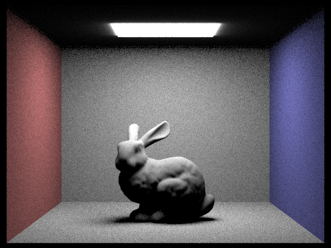 |
|
|
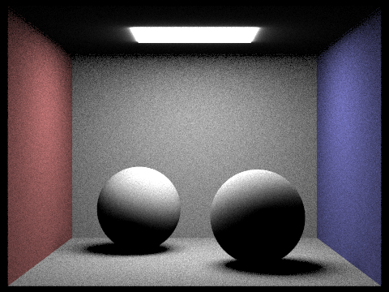 |
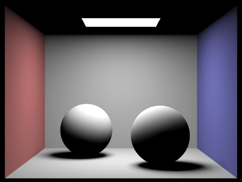 |
|
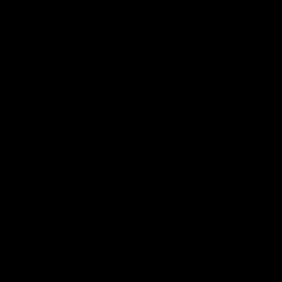 |
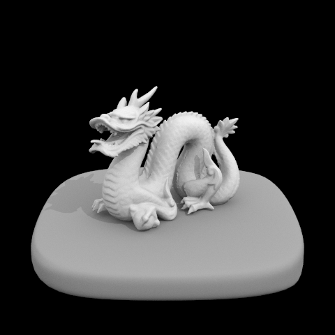 |
With the same number of samples, the hemisphere renders are visibly grainy everywhere, while the light-sampled renders are smooth.
The dragon scene is lit only by a point light, which has no geometry, so a random hemisphere ray can never hit it and the hemisphere render is entirely black; light sampling handles it without any problem.
The ceiling right next to the area light also looks different: the emissive mesh that hemisphere rays hit glows equally in every direction, including toward the ceiling, whereas AreaLight::sample_L only emits downward, so the ceiling stays dark with light sampling (this is expected, as the starter code notes).
Focus on one particular scene with at least one area light and compare the noise levels in soft shadows when rendering with 1, 4, 16, and 64 light rays (the -l flag) and with 1 sample per pixel (the -s flag) using light sampling, not uniform hemisphere sampling.
|
|
|
|
|
|
The soft shadow under the bunny is the penumbra: points that can see only part of the area light. A single light ray per pixel can only report "fully visible" or "fully blocked", so with -l 1 the penumbra is a scatter of black and bright speckles, and the shadow has no clear shape.
With 4 light rays each pixel can take five values (0, 1/4, …, 1 of the light visible), and the shadow's outline appears but is still very speckled. At 16 rays the gradient from the dark core under the bunny to the lit floor is clearly visible with mild grain, and at 64 rays the shadow is a smooth, soft gradient.
This matches Monte Carlo behaviour: the noise (standard deviation) falls as \(1/\sqrt{N}\), so every 4× increase in light rays halves the noise. Render time grows roughly linearly with the number of light rays (0.06 s, 0.14 s, 0.50 s, 1.97 s).
Note that the camera still takes only 1 sample per pixel, so object edges stay aliased; extra light rays only reduce the lighting noise.
Compare the results between uniform hemisphere sampling and lighting sampling in a one-paragraph analysis.
Both methods estimate the same integral and converge to the same answer, but they put their samples in very different places. Uniform hemisphere sampling chooses directions without regard to where the light is, and in the Cornell box the light covers only a small solid angle of each point's hemisphere. Most samples therefore hit a wall and contribute nothing, while the rare samples that hit the light contribute a large value (divided by the small pdf \(1/2\pi\)). That high variance shows up as heavy grain across the whole image, even at 64 samples per pixel and 32 light samples.
Light sampling draws every sample toward the light, so every unoccluded sample contributes and the estimate has much lower variance; at the same sample counts its images are smooth, and it was also faster in all three scenes, partly because its shadow rays only need an any-hit test rather than the closest hit.
Light sampling can also render lights that hemisphere sampling cannot hit at all: a point light has zero area, so the probability of a random direction hitting it is zero, and the hemisphere render of dragon.dae is completely black.
The trade-off is that light sampling needs explicit light objects and per-light pdfs, and it only captures direct light from those lights; hemisphere sampling is simpler and treats any emissive surface uniformly, which is the idea we build on for indirect light in Part 4.
Part 4: Global Illumination
Walk through your implementation of the indirect lighting function.
Sampling the BSDF. DiffuseBSDF::sample_f(wo, &wi, &pdf) draws an incoming direction from a cosine-weighted hemisphere (pdf \(= \cos\theta / \pi\)), writes it to wi together with its pdf, and returns \(f = \rho/\pi\). Cosine weighting puts more samples near the normal, where the \(\cos\theta\) factor in the rendering equation is large.
Depth bookkeeping. In raytrace_pixel each camera ray starts with depth = max_ray_depth, the number of bounces it is still allowed to take, and every bounce ray gets its parent's depth minus one.
est_radiance_global_illumination intersects the camera ray with the scene. It adds the zero-bounce term (light emitted toward the camera) and, if the depth is at least 1, the result of at_least_one_bounce_radiance.
The recursion. at_least_one_bounce_radiance(r, isect) returns the light leaving the hit point toward the previous point on the path:
- It adds the direct lighting at this hit (
one_bounce_radiance, the light-sampling estimator from Part 3). - If
r.depth == 1no bounces remain, so it returns. - Russian roulette: with probability 0.3 the path is terminated here. This test is skipped on the first bounce from the camera (
r.depth == max_ray_depth), so at least one indirect bounce is always traced whenmax_ray_depth > 1. - It samples a direction
wiwithsample_f, converts it to world space witho2w, and traces a new ray from the hit point withmin_t = EPS_Fanddepth = r.depth - 1. If that ray leaves the scene there is no indirect contribution. - Otherwise it recurses on the new hit and adds \[\frac{f(\omega_o, \omega_i)\; L_{\text{recursive}}\; \cos\theta_i}{\text{pdf}(\omega_i)\; (1 - p_{\text{term}})}.\] Dividing by the continuation probability \(1 - p_{\text{term}}\) makes up for the paths that were terminated, so the estimator stays unbiased.
Accumulated vs. single bounces. When isAccumBounces is true, the direct term is added at every level of the recursion, so the result is the sum of bounces 0 through \(m\). When it is false, the direct term is added only at the last level (depth == 1) and earlier levels just pass the recursive result through, so the output contains only light that bounced exactly \(m\) times. In the same mode the zero-bounce term is only included when max_ray_depth == 0.
Show some images rendered with global (direct and indirect) illumination. Use 1024 samples per pixel.
Rendered with -s 1024 -l 4 -m 5 -r 480 360.
|
|
|
Compared to the direct-only renders in Part 3, the ceiling is now lit, the shadows are no longer pure black, and the walls bleed color: the left side of the spheres and of the bunny is tinted red, the right side blue.
Pick one scene and compare rendered views first with only direct illumination, then only indirect illumination. Use 1024 samples per pixel. (You will have to edit PathTracer::at_least_one_bounce_radiance(...) in your code to generate these views.)
|
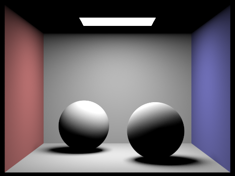 |
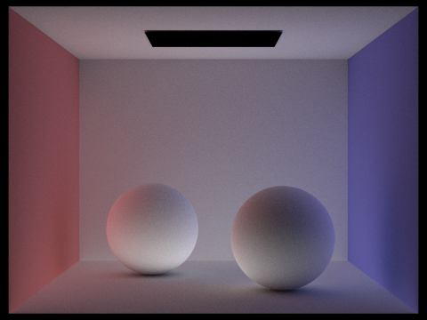 |
The direct-only image is zero-bounce plus one-bounce light (-m 1). For the indirect-only image I temporarily removed the zero-bounce term and skipped one_bounce_radiance at the first hit from the camera (r.depth == max_ray_depth), keeping every later bounce (-m 5). Both use 1024 samples per pixel and 4 light rays.
Direct lighting gives hard contrast: surfaces facing the light are bright, while the ceiling, the bottoms of the spheres and the shadows are completely black because they cannot see the light. Indirect lighting is the opposite. It is soft and low-contrast, and it lights exactly the regions direct light misses: the ceiling, the undersides of the spheres and the shadow areas. It also carries the wall colors, so the sides of the spheres facing the walls glow red and blue, and the light panel itself appears black because the light's own emission is a zero-bounce term. Adding the two images gives the full global illumination render above.
For CBbunny.dae, render the mth bounce of light with max_ray_depth set to 0, 1, 2, 3, 4, and 5 (the -m flag), and isAccumBounces=false. Explain in your writeup what you see for the 2nd and 3rd bounce of light, and how it contributes to the quality of the rendered image compared to rasterization. Use 1024 samples per pixel.
Rendered with -s 1024 -l 4 -o 0 -r 480 360.
|
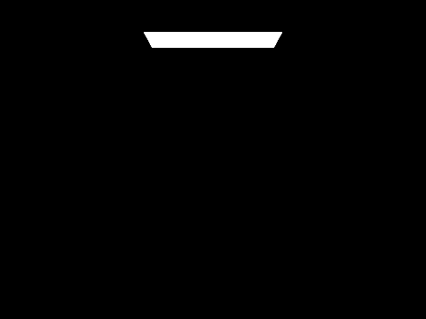 |
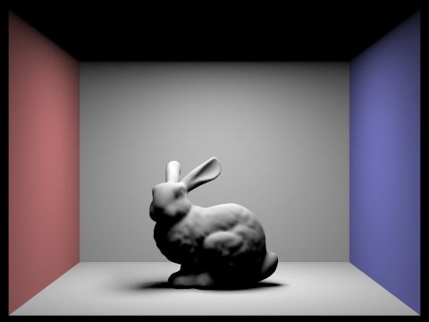 |
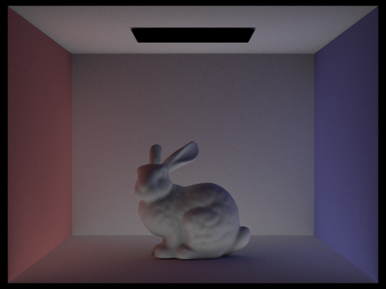 |
|
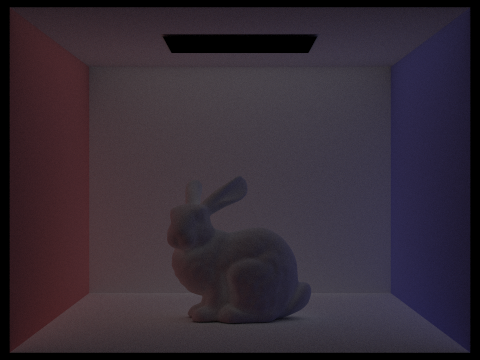 |
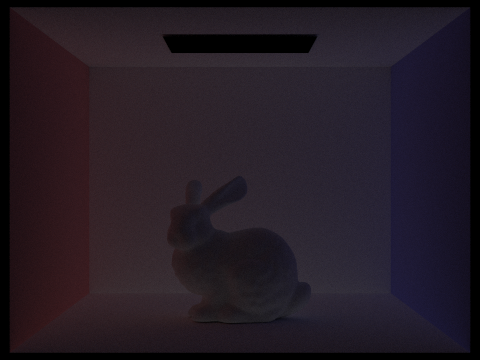 |
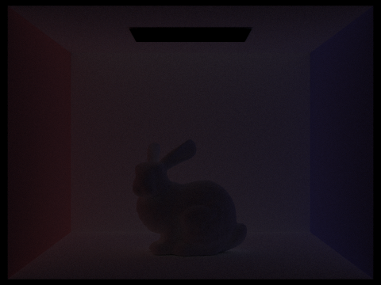 |
The 0th bounce is only the light source itself, and the 1st bounce is ordinary direct lighting with black shadows and a black ceiling. The 2nd bounce is light that reflected off one surface before reaching the surface we see. It lights the ceiling, the underside of the bunny and the inside of its shadow, all of which were black in the 1st bounce. It is also where color bleeding comes from: the floor and the bunny pick up red from the left wall and blue from the right wall. The light panel is now black, because the panel itself does not reflect light. The 3rd bounce looks similar but is dimmer and even more uniform: after two diffuse reflections the light has been spread around the whole box, so there are almost no shadows left, only a faint overall glow tinted by the walls. Each later bounce is dimmer still, since every diffuse reflection absorbs part of the light (albedo < 1).
A rasterizer typically shades each pixel using only the light that arrives directly from the light sources, which is essentially the 1st bounce, and approximates everything else with a constant "ambient" term. That leaves shadows and unlit areas either flat black or uniformly gray. The 2nd and 3rd bounces add the light that actually arrives in those areas, with the right spatial variation: corners and creases stay darker, while areas facing a bright or colored surface get brighter and take on its color. This soft fill light, contact shadowing and color bleeding are a large part of why path-traced images look realistic.
For CBbunny.dae, compare rendered views of accumulated and unaccumulated bounces for max_ray_depth set to 0, 1, 2, 3, 4, and 5 (the -m flag). Use 1024 samples per pixel.
| max_ray_depth | Unaccumulated (only the mth bounce) | Accumulated (bounces 0 through m) |
|---|---|---|
| 0 | 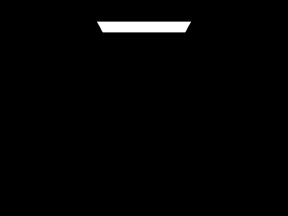 | |
| 1 | ||
| 2 | ||
| 3 | ||
| 4 | ||
| 5 |
At depth 0 and 1 the two modes look the same apart from the light panel: at depth 0 both show only the light, and at depth 1 the unaccumulated image is the direct lighting alone while the accumulated one also includes the visible light panel. From depth 2 on they differ a lot. The unaccumulated images get darker with every bounce, because each diffuse reflection absorbs part of the light. The accumulated images get brighter, because each extra bounce adds its (smaller) contribution on top of what was already there. The jump from depth 1 to 2 is the largest (the ceiling and shadows light up and color bleeding appears), depth 3 adds a smaller amount, and from depth 4 on the image hardly changes because the later bounces carry very little energy. In other words, the accumulated image at depth \(m\) is the sum of the unaccumulated images 0 through \(m\), and that sum converges quickly.
For CBbunny.dae, output the Russian Roulette rendering with max_ray_depth set to 0, 1, 2, 3, 4, and 100 (the -m flag). Use 1024 samples per pixel.
Accumulated bounces with Russian roulette (termination probability 0.3 after the first indirect bounce), -s 1024 -l 4 -o 1 -r 480 360.
|
|
|
|
|
|
|
|
The images at depth 4 and depth 100 look almost identical. With a 30% chance of terminating at each bounce after the first, the chance that a path survives many bounces drops off exponentially (for example \(0.7^{10} \approx 3\%\)), and the light carried by a long path is tiny anyway after many absorbing bounces. So raising the limit from 4 to 100 adds only about 25% to the render time (264 s vs. 332 s) instead of growing 25×; most paths stop after a few bounces on their own. Because surviving paths are divided by the continuation probability, terminating paths early does not make the image darker on average; it only adds some noise.
Pick one scene and compare rendered views with various sample-per-pixel rates, including at least 1, 2, 4, 8, 16, 64, and 1024. Use 4 light rays.
CBspheres_lambertian.dae, -l 4 -m 5 -r 480 360.
|
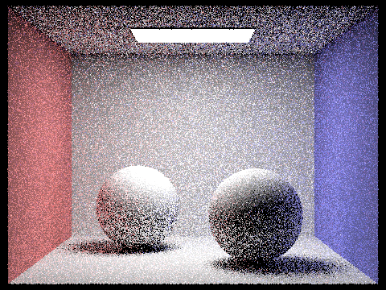 |
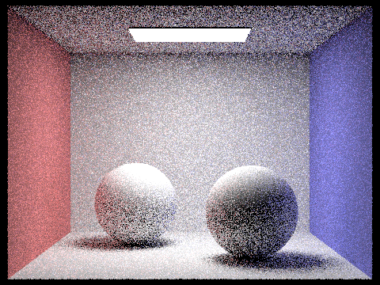 |
|
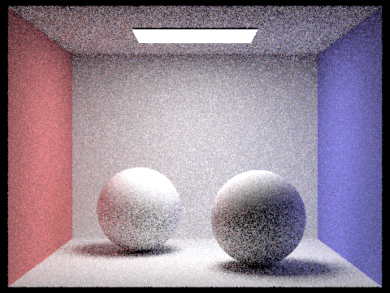 |
|
|
|
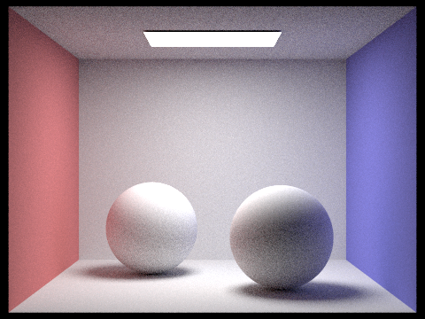 |
|
|
At 1 sample per pixel the image is dominated by speckle noise: each pixel follows a single random path, so whether it is bright or dark depends on luck, and the walls, ceiling and spheres are covered in black and white dots. The noise is worst on the ceiling and in the shadows, which are lit only by indirect light. Each doubling of the sample count reduces the noise, but slowly, because the standard deviation of a Monte Carlo estimate falls as \(1/\sqrt{N}\): going from 1 to 4 samples only halves the noise, and going from 64 to 1024 halves it twice. By 16 samples the scene is clearly readable but grainy, at 64 the grain is fine and mostly in the indirectly lit areas, and at 1024 the image is essentially clean. Render time grows linearly with the number of samples, so the last few steps of noise reduction are by far the most expensive. Part 5's adaptive sampling targets exactly this cost.
Part 5: Adaptive Sampling
Explain adaptive sampling. Walk through your implementation of the adaptive sampling.
Different pixels converge at very different rates. A pixel on a directly lit wall gets nearly the same value from every sample and is clean after a few dozen samples, while a pixel in a soft shadow or a region lit only by indirect light needs many more. Using a fixed high sample count everywhere wastes most of the work on pixels that converged long ago. Adaptive sampling instead keeps sampling each pixel only until its value is known precisely enough, and then stops.
For each pixel I keep the running sums \(s_1 = \sum_k x_k\) and \(s_2 = \sum_k x_k^2\) of the sample illuminances \(x_k\) (Vector3D::illum() of each sample's radiance), alongside the RGB sum used for the final color. From these, after \(n\) samples,
\[\mu = \frac{s_1}{n}, \qquad \sigma^2 = \frac{1}{n-1}\left(s_2 - \frac{s_1^2}{n}\right), \qquad I = 1.96\,\frac{\sigma}{\sqrt{n}},\]
where \(I\) is the half-width of the 95% confidence interval for the pixel's mean. The pixel has converged when \(I \le \text{maxTolerance} \cdot \mu\), i.e. we are 95% confident the true value is within 5% (the default tolerance) of the current estimate.
The test is relative to \(\mu\), so dark pixels do not need the same absolute precision as bright ones. I use \(\le\) so that a pixel whose samples are all black (\(\mu = \sigma = 0\)) also counts as converged.
To keep the overhead low, the check runs only after each full batch of samplesPerBatch samples (when \(n\) is a multiple of the batch size), up to the maximum ns_aa. When a pixel converges I stop the loop, average the RGB sum over the \(n\) samples actually taken, and write \(n\) into sampleCountBuffer. That buffer produces the sample-rate image, colored from blue (few samples) to red (the maximum).
Pick two scenes and render them with at least 2048 samples per pixel. Show a good sampling rate image with clearly visible differences in sampling rate over various regions and pixels. Include both your sample rate image, which shows your how your adaptive sampling changes depending on which part of the image you are rendering, and your noise-free rendered result. Use 1 sample per light and at least 5 for max ray depth.
Rendered with -s 2048 -a 64 0.05 -l 1 -m 5 -r 480 360.
|
|
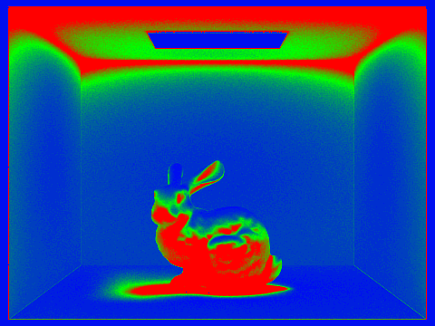 |
|
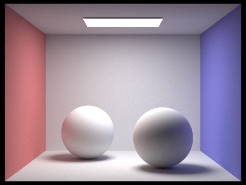 |
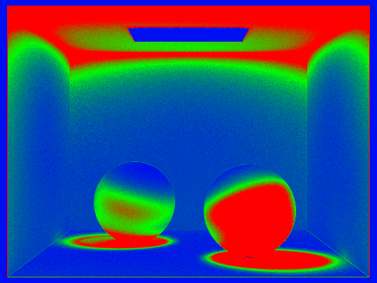 |
In the sample-rate images, blue means a pixel stopped early and red means it used the full 2048 samples. The renders took 101 s (bunny) and 102 s (spheres) with 64 threads, and both are essentially noise-free. The back wall, the side walls and the parts of the floor in direct light are mostly blue. They receive strong, nearly uniform light from the area light, so their samples agree with each other and the pixels converge after one or two batches. The light panel itself is blue too: it returns the same emitted value on every sample, so its variance is zero. The red regions are the ones that get little direct light and are lit mostly by indirect bounces, so their samples vary a lot: the ceiling (which only receives light that has bounced off the walls and floor), the soft shadows under the bunny and the spheres, and the sides of the objects facing away from the light. On the spheres the boundary between red and green follows the shadow terminator, where the light starts to be blocked by the sphere itself. Green bands mark the transitions, for example around the edges of the shadows and along the top of the walls next to the ceiling. This is exactly the distribution we want: the sampling budget is spent on the noisy, indirectly lit regions instead of being spread evenly over pixels that converged long ago.
(Optional) Part 6: Extra Credit Opportunities
I did not attempt any extra credit.
Acknowledgement of AI
I used an LLM (Claude Code) to debug my code. I also used it to make the raw drafts of the write-up website.